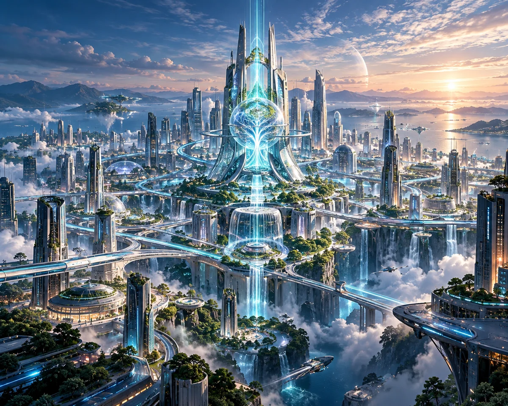

制作コンセプト｜キャラクターから Bio-City へ
単発の発信をつなぎ、キャラクターたちの世界から積み重なるブランド資産へ。
船井生醫には、バーナー姐さんの印象的なセリフや「酸痛掰掰舞」など、以前から育ててきた映像とキャラクターがあります。外部で撮影し、社内で編集・仕上げた作品もそのひとつです。本企画はそれらをゼロから作り直すのではなく、別々のブランドや企画で生まれた表現をつなぎ直す取り組みです。
共通の舞台となるのが「生命の都市」Bio-City。身体の働きを都市の仕組みに、長時間の座り姿勢やスクリーンとの付き合い方などを架空の敵キャラクターに見立て、商品とつながるブランドキャラクターをガーディアンズとして描きます。それぞれの個性、決めゼリフ、音楽のリズムを物語や体験につなげていきます。
Bio-City の世界観を見る →
制作したもの｜構想からWeb体験へ
キャラクターの設定、アニメ、音楽、Webサイトを、実際に楽しめるひとつの作品へ。
キャラクターの世界と物語
Bio-City を舞台に、7組のヒーロー、エントロピー軍団、4幕構成の物語をまとめ、ビジュアルやキャラクター同士の関係、ストーリーの流れを整えました。
それぞれのブランドキャラクターが、敵や使命を持つ同じ物語の登場人物として活躍します。
ヒーロー図鑑を見る
AIを活用した映像とオリジナル音楽
『Bio-City 覚醒の時』を中心に、アニメーション、テーマ曲、キャラクターごとの音楽を組み合わせています。
映像制作には複数のAIツールを活用。音楽は家葦がAI音楽ツールを用いて制作し、キャラクターの声やリズム、感情表現に個性を加えています。
オリジナル音楽を聴く中国語・日本語の体験型Webサイト
世界観、ヒーロー図鑑、メインアニメ、4幕の物語、音楽と歌詞、8問の意思決定ラボ、6つのBio-Cityゲームを中国語（繁体字）と日本語で楽しめるようにしました。
キャラクターに関連する商品情報へのリンクも設け、興味に合わせてさまざまな入口から世界を探索できます。
体験コンテンツへデジタル活用｜創作を長く活かせるブランド資産へ
ひとつの作品を、プラットフォームや場面に合わせて何度も活かしていく。
映像とSNSでの発信
メインアニメを軸に、キャラクターの登場シーン、日常を題材にした短い物語、名場面、テーマ曲のクリップなどを、YouTube、YouTube Shorts、TikTok、Instagram Reels に合った形で展開する可能性を探ります。
長編と短編を組み合わせ、単発の動画では終わらないシリーズコンテンツを目指します。
キャラクター音楽とSNSでの交流
MJロボットやバーナー姐さんなどの個性とテーマ曲を活かして、ダンス、掛け合い、音楽を使った参加型のアイデアへと広げられます。
音楽は映像のBGMだけでなく、キャラクターの印象を残し、共有したくなるコンテンツにもなります。
ブランドコンテンツとデジタル資産
キャラクター、映像、音楽、ビジュアルをSNS投稿、広告クリエイティブ、商品ページ、イベント、検索から見つけてもらうためのコンテンツなどへと活用できます。
制作した素材を蓄積・整理することで、次の企画にも活かせるブランド資産として育てていきます。
コンテンツ運営｜視聴から体験、商品との接点へ
今後は「コンテンツを先に届ける」ことを軸に、物語や短編動画、音楽で記憶に残る接点を作り、体験と商品情報へつなげていく構想です。
- 01
コンテンツとの出会い
アニメ、短い動画、音楽、SNSを通じて、より多くの人が Bio-City に触れるきっかけを作ります。
- 02
インタラクティブな体験
ヒーロー図鑑、映像や音楽、意思決定ラボ、ゲームを通して、キャラクターと世界観をより深く楽しめます。
- 03
商品情報への導線
キャラクターと商品のつながりを分かりやすく示し、興味を持った人が公式ストアで関連商品を調べられるようにします。
- 04
反応を見ながら改善
動画やWebサイトでの視聴・操作、ゲームへの参加、商品リンクのクリックなどを、GA4などで確認し、次のコンテンツ制作に生かします。
視聴から体験、商品情報の確認までの自然な流れを重視しています。商品リンクのクリックは、購入が成立したことを意味しません。
これからの展開｜さらに広がるIPの可能性
デジタルコンテンツから、キャラクターが日常にも登場する体験へ。
ひとつの創作が、次の物語の始まりに。
Bio-City は一本のアニメや一度きりのキャンペーンではなく、既存のキャラクター、オリジナル映像・音楽、Web体験をつなぎ直す取り組みです。
物語との出会いから共有、ブランドとの関わり、商品情報の探索まで。一つひとつの制作を、次につながる価値として残していきます。
FUNAI CARE ガーディアンズの物語が、画面の中だけで終わらず、これからも広がっていきますように。